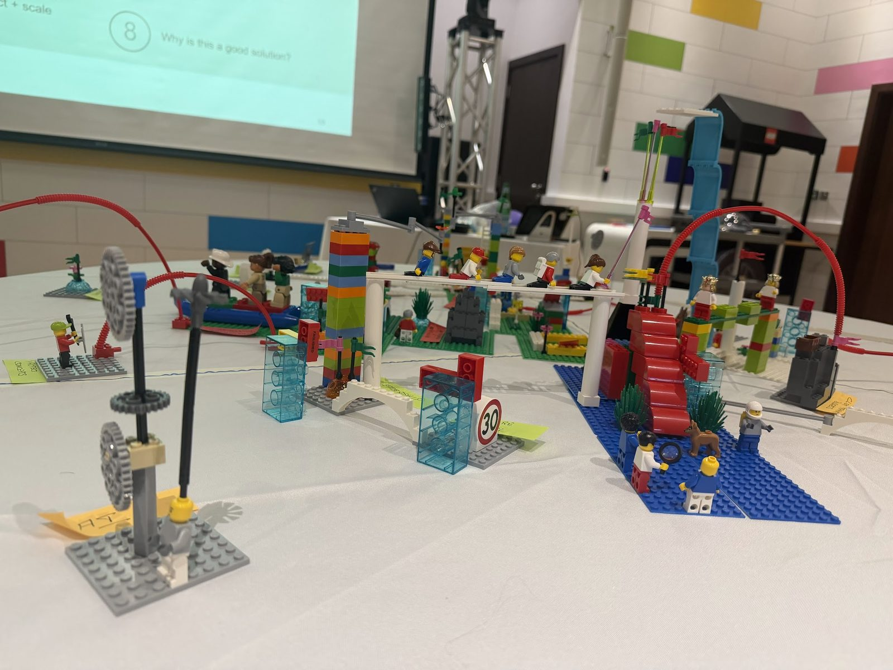

LEGO® Serious Play®
Workshops for Leadership and Teams.
Facilitated sessions that turn abstract conversations into something the whole team can see, question, and decide on. Run in Dubai and across the UAE, and remotely with distributed teams.
Plain language
Think with your hands.

Yes, LEGO. No, we’re not building castles for fun.
LEGO® Serious Play® is a facilitated method. Everyone in the room builds a model in response to a question, then explains what they built. The model carries the meaning, so the conversation moves faster and further than talking alone would take it.
It is a way of running a working session. It is not a game, not an icebreaker, and not a team-building afternoon with bricks on the table.
What it is
A structured method for thinking together about complex, unclear, or contested problems.
What it isn’t
An away-day activity, a personality exercise, or a workshop that ends when the bricks go back in the box.
The thinking
There’s a method behind the bricks.
LEGO® Serious Play® is grounded in research on learning, play and constructionism: the idea that we can think and learn differently when we build something outside our heads.
Our hands become part of the thinking process. Abstract ideas become physical models we can see, move, question and connect. And because everyone builds and everyone shares, the conversation isn’t reserved for the loudest voice or the most senior person in the room. The model becomes the focus, creating space for different perspectives to be expressed, explored and challenged.
Research has also found that LEGO® Serious Play® can support psychological safety and more collaborative ways of approaching difficult issues.
“An hour of play discovers more than a year of conversation.”
That’s part of the power of serious play. When people build, explain, listen and explore together, things can surface that another hour around a conference table might never uncover.
Hands on. Minds on. Everyone in.
Why it works
Why building changes what a team can see.
01
Everyone contributes
Every person builds and every person explains. The confident voice doesn’t set the agenda, and the quiet expert doesn’t get talked over.
02
Thinking becomes visible
What someone means stops being a matter of interpretation. It’s on the table, and everyone is looking at the same thing.
03
Abstract ideas become tangible
“Better collaboration” and “more accountability” stop being slogans and turn into something specific enough to argue with.
04
Assumptions can be challenged
You question the model, not the person. That makes disagreement easier to have and easier to resolve.
Use cases
What we use it for.
Team Agreements
Build how you want to work together, then turn it into agreements people actually recognise.
Team Identity
Who we are, what we bring, what we need from one another, what we want to be known for.
Strategy
Surface assumptions, make trade-offs discussable, and build shared direction rather than present it.
Ways of working
Meetings, decisions, information flow, autonomy: the everyday system the team runs on.
Go-to-market
Align marketing, sales, product and delivery around one picture of the customer and the offer.
Team building
New teams, merged teams, newly led teams: build the working relationship, not a memory of a fun day.
Productive Dialogue
Difficult conversations that keep circling, or never quite happen. The model becomes the thing under scrutiny, so people can explore what is contested without it turning into a confrontation across the table.
And the ones that don’t have a name yet. Complex organizational problems are exactly what the method is for.
The session
How a workshop runs.
The method is consistent. The questions, the depth, and the output are designed around your problem.
The challenge
We open with the real question, the one the team has been circling. Everyone hears it framed the same way.
Individual building
Everyone builds their own answer. No conferring, no waiting to see what the senior person says first.
Sharing the story
Psychologically safe, each person explains their model. Everyone speaks, and everyone is listened to for the same length of time.
Reflection and questioning
We question the models, not the people. Differences surface early, while they’re still cheap to resolve.
Shared models
Where it serves the work, the team builds one connected model: a shared picture nobody owns alone.
The output
Agreements, decisions, priorities, principles, strategy, or new ways of working. Something the team can use on Monday.
Honest framing
A method, not the outcome.
LEGO® Serious Play® sits inside a broader facilitation practice. Sometimes the whole engagement is built around it. Sometimes it’s one method among several in a longer piece of work. Sometimes it isn’t the right method at all, and we’ll say so.
The workshop is never the point. What the team can do differently afterwards is the point.
The method follows the problem, not the other way around.
Questions
Before you ask.
Is this a team-building day?
No. It’s a working session that produces something: agreements, decisions, a strategy people can explain. Teams often say it felt like the best team-building they’ve done, but that’s a side effect, not the brief.
Do people need to be creative, or good with LEGO?
No. The method is designed for people who say they aren’t creative. Everyone gets a short warm-up, and within twenty minutes the bricks stop being the interesting part.
How long is a session, and how many people?
Anywhere from half a day to two days, depending on what you’re trying to resolve. A half day works for a focused challenge, surfacing where a team actually stands. Getting to guiding principles takes a full day or more, because the group has to build the system before it can test it.
Tables run 4-8 people. That’s not a preference. Everyone builds and everyone tells their story, so the table size is what protects the conversation. Groups of up to twenty work well across parallel tables, with the right facilitation to hold them. We’ll recommend the shape once we understand the problem.
Can it work with a remote or hybrid team?
The method is strongest in a room together. For distributed teams we design a hybrid approach: kits sent ahead, or a different facilitated method where building isn’t practical. We’d rather change the tool than run a weak version of it.
What happens after the workshop?
We turn what happened in the room into something usable: the agreements, principles or decisions the team will work from. And then we come back together to unpack what stuck, what didn’t, and what needs to change. Better ways of working evolve with the organization.
Bring us the thing that’s stuck.
Bring the problem, not a workshop request. We’ll tell you whether LEGO® Serious Play® is the right method for it, and what we’d suggest if it isn’t.